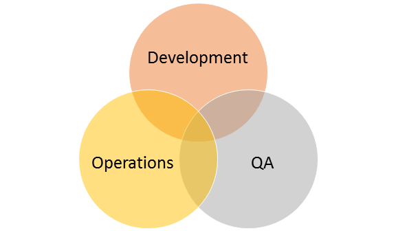

DEVELOPMENT
iborn.net
Skopje 2015
AGENDA
Development team
Business Processes & Automation
Software Development Process
Development Team

Knowledge
Responsibilities
Communication
Documentation
Achievements & Targets
Where were we?
What are we now?
What next?
Business Processes
THANK YOU!